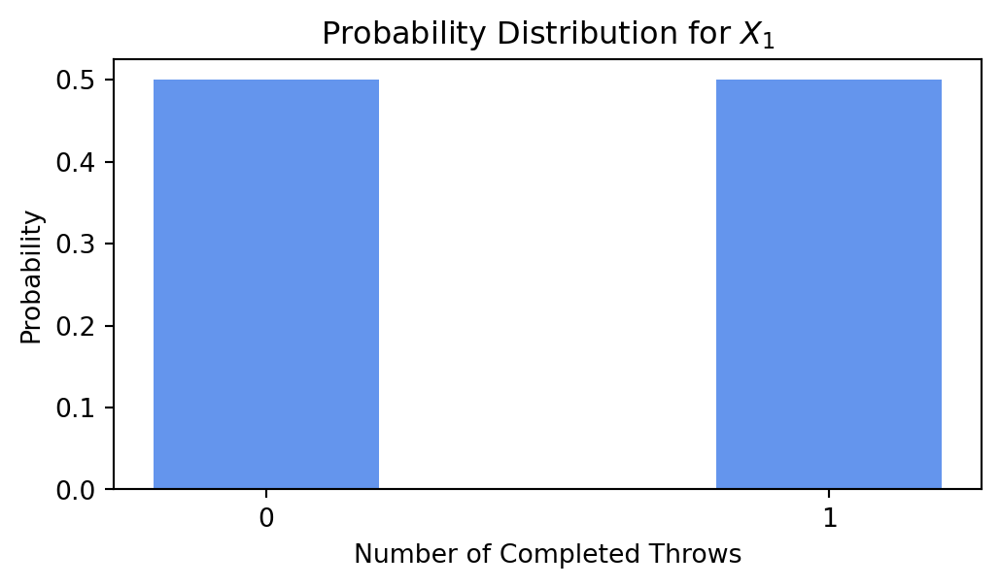
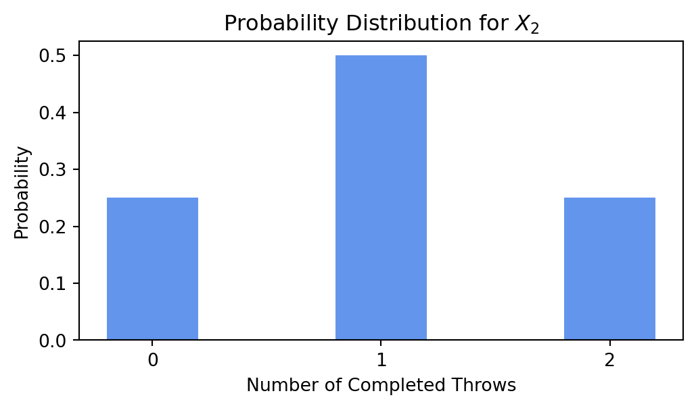
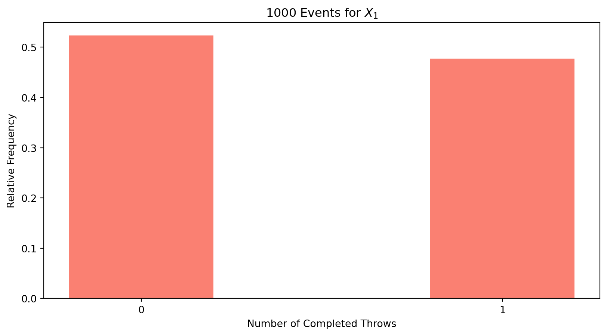
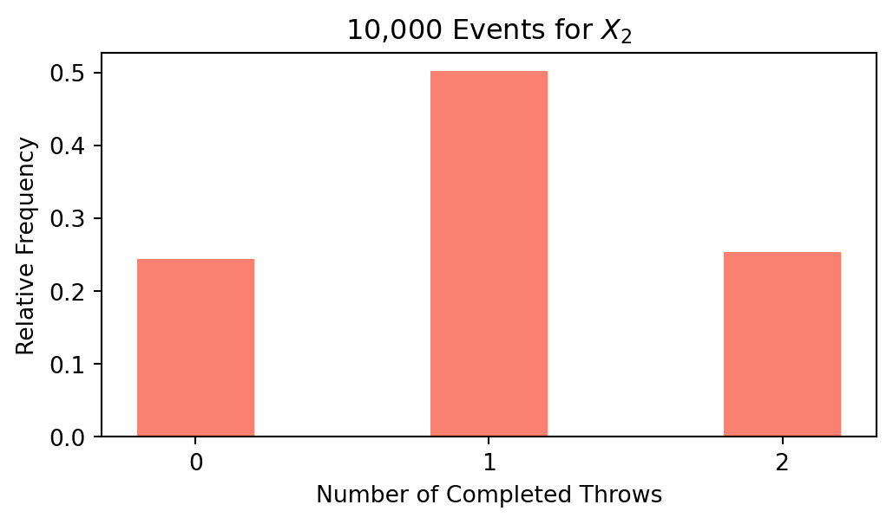

This is the first blog post in a series of posts for my class on machine learning at Virginia Tech. Here we will discuss probability theory, which is the foundation to the later machine learning posts in this series. While probability theory is a massive branch of mathematics that can’t be fully covered in one blog, we’ll go over topics like random variables, conditional probability, and independence.
The Data
Before that, however, let’s introduce the dataset we’ll be using for the entirety of this blog series. The data was collected by Burn, the VT Men’s Ultimate Club. Ultimate, also known simply as frisbee, is a game that involves players trying to throw a disc between themselves with the goal of being in their team’s endzone with the disc, scoring them a point. For many of you, this game may be foreign, making some of the variables confusing. While you don’t need to know most of the context to understand the machine learning concepts shown, I’ll do my best to explain the important parts as succinctly as possible.
The data represents the performance of the ultimate club at Steel City, a tournament in Pittsburgh they went to this Fall. Only data on Burn’s offense (when they had the disc) was collected. In the initial dataset, each row represents an action with the disc, either throwing it or picking it up. The features include variables like the opponents they were facing, who threw it to who, the type of throw it was, and the outcome of the throw. In total the dataset is \(986 \times 40\), though spinoffs of the dataset will be used later on in the series.
Code
```{python}import numpy as npimport pandas as pddat = pd.read_csv("currDatSteelCity23.csv")dat = dat.drop(['Unnamed: 0'], axis=1)dat.head()```
Opponent
idx
DJI.ID
Full.ID
Game.ID
Point.ID
Possession.ID
Defense.Type
Handler
Receiver
...
BasicEPAOpp
TrueEPAHan
TrueEPARec
EPA
OppFactor2
EPAHan
EPARec
EPAHanRes
EPAHanTot
EPAHan2
0
Binghamton
538
472
1.1.1
1
1
1
Man
NaN
Micah
...
0.000
0.000
0.000
0.000
0.0
NaN
NaN
0.000
NaN
NaN
1
Binghamton
539
472
1.1.1
1
1
1
Man
Micah
John
...
0.024
0.018
0.005
0.053
0.0
0.039
0.014
0.015
0.054
0.059
2
Binghamton
540
472
1.1.1
1
1
1
Man
John
Dan B
...
0.011
0.008
0.002
0.042
0.0
0.031
0.011
0.000
0.031
0.046
3
Binghamton
541
472
1.1.1
1
1
1
Man
Dan B
Gribs
...
-0.249
-0.249
0.000
-0.420
0.0
-0.420
0.000
0.000
-0.420
-0.420
4
Binghamton
542
472
1.1.2
1
1
2
Man
NaN
Micah
...
0.000
0.000
0.000
0.000
0.0
NaN
0.000
0.000
NaN
NaN
5 rows × 40 columns
Random Variables
A random variable (RV) is a variable of unknown value that represents the numerical outcome of some process. This is vague, but essentially an RV can’t be known (hence it’s a variable), has to be numerical, and has to have some kind of context to it. RVs are typically represented by capitalized letters, like \(X\) or \(Y\). Some examples include the number of coins that flip to head out of 2 or the height of a person. The former example is one where the RV is discrete: it can only be a distinct value like 0, 1, or 2. The latter example is one where the RV is continuous: it can be any of the infinite values within a range, like any number between 0 and 1000.
The significance of random variables in the world of probability theory and, more broadly, statistics in general is that RVs have probability distributions that allow us to calculate the probabilities of RVs. This process has many applications, where people try to understand and estimate real world RVs.
Probability Distributions
Let’s look at an example in the context of our ultimate data. Say we know that on any given throw, John has a 50% chance of completing the throw without turning it over to the other team. Our random variable \(X_{1}\) is the number of completed throws John makes off of 1 throw. This is RV is discrete. What would the resulting probability distribution look like? This one’s pretty simple, he has a 50% chance of completing the one throw, and he has a 50% chance of not completing it. Thus, the probability distribution looks like this:
Code
```{python}import matplotlib.pyplot as pltx = {'0':0.5, '1':0.5}completions =list(x.keys())probabilities =list(x.values())fig = plt.figure(figsize = (6, 3))plt.bar(completions, probabilities, color ='cornflowerblue', width =0.4)plt.xlabel("Number of Completed Throws")plt.ylabel("Probability")plt.title("Probability Distribution for $X_1$")plt.show()```

What about the probability distribution of the random variable \(X_{2}\), the number of completed throws John makes off of 2 throws? Each throw has an equal chance of being a completion or an incompletion (50%). Half of the time John will complete the first throw, and half of those times John will complete the second throw. That gives the probability of John completing 2 out of 2 throws 0.25. The same logic can give you the probability of 0 completions. Thus, the probability distribution for \(X_{2}\) looks like this:
Code
```{python}x = {'0':0.25, '1':0.5, '2':0.25}completions =list(x.keys())probabilities =list(x.values())fig = plt.figure(figsize = (6, 3))plt.bar(completions, probabilities, color ='cornflowerblue', width =0.4)plt.xlabel("Number of Completed Throws")plt.ylabel("Probability")plt.title("Probability Distribution for $X_2$")plt.show()```

\(X_{1}\) and \(X_{2}\) are examples of random variables with a binomial distribution. This distribution represent RVs that are the number of successes in a set of trials, where each trial results in one of two outcomes: success or failure. We won’t go too much into detail on the math behind it, but here’s the formula for a binomial distribution:
\[
P(k)=\frac{n!}{k!(n-k!)}p^{k}(1-p)^{n-k}
\]
where \(k\) is the number of successes, \(n\) is the number of trials, and \(p\) is the probability of success. \(P(k)\) is the probability of getting \(k\) successes.
Events
So now we know the probability distribution of John’s completions out of a set number of throws. If we had John actually go through with this experiment and we kept track of his throws and whether they were completed or not, we should get actual values to \(X_{1}\) and \(X_{2}\). When we collect a value for \(X_{1}\) one time, we’ll get either a completion or a turnover. This is known as an event and will be part of our sample (though right now it’s the only event in out sample). Graphing that, it won’t look like the probability distribution we laid out for \(X_{1}\). However, if we have John attempt this a large number of times, our results should resemble the probability distribution we assigned it. This describes the notion that the results of a sequence of RVs will converge towards their expectation as we gather more and more events in our sample, otherwise known as the law of large numbers. This theorem is one of the main principles of probability theory. Let’s test it out and run 10,000 events, or trials, for \(X_{1}\):
Code
```{python}n, p =1, 0.5s = np.random.binomial(n, p, 10000)df = pd.Series(s).value_counts() /len(s)df = df.sort_index()completions =list(map(str, list(df.keys())))freq =list(df.values)print(df)fig = plt.figure(figsize = (6, 3))plt.bar(completions, freq, color ='salmon', width =0.4)plt.xlabel("Number of Completed Throws")plt.ylabel("Relative Frequency")plt.title("10,000 Events for $X_1$")plt.show()```
0 0.5041
1 0.4959
dtype: float64

That looks pretty close to me. Let’s test out \(X_{2}\) now:
Code
```{python}n, p =2, 0.5s = np.random.binomial(n, p, 10000)df = pd.Series(s).value_counts() /len(s)df = df.sort_index()completions =list(map(str, list(df.keys())))freq =list(df.values)print(df)fig = plt.figure(figsize = (6, 3))plt.bar(completions, freq, color ='salmon', width =0.4)plt.xlabel("Number of Completed Throws")plt.ylabel("Relative Frequency")plt.title("10,000 Events for $X_2$")plt.show()```
0 0.2444
1 0.5023
2 0.2533
dtype: float64

Looks like it worked! Now that we know a little bit about random variables and their underlying probability distributions, we can further delve into the world of probabilities.
Probability Theory
Probability theory is, simply put, the math behind probabilities. We’ve already worked with the three main parts of probability theory:
random variables
probability distributions
events
Because of this, we arguably just covered probability theory, but let’s go through some of the basics of how probabilities work just for good measure.
Probability Principles:
\(P(x) \in [0,1]\)
\(P(\Omega) = 1\)
Let’s start off with how probabilities work. The probability of \(x\), denoted by \(P(x)\), is the chance that \(x\) occurs. It must be a number between and including 0 and 1. A probability of 0 means the outcome will never occur, while a probability of 1 means the outcome will always occur. \(\Omega\) denotes our sample space, or all the possible outcomes of the given event. The probability of one of these outcomes occurring is 1, as no other outcome can occur (otherwise it would be in the sample space).
The above was pretty intuitive, but it’s important to understand those concepts well. Now, let’s go over some useful definitions.
Probability Definitions:
Independence: \(P(A|B) = P(A)\) or \(P(B|A) = P(B)\)
Mutually exclusive: \(P(A\cap B) = 0\)
Two events are independent if the occurrence of one event does not change the probability of the other event. \(P(A|B)\) stands for the probability of \(A\) occurring given that \(B\) occurs. If that is equal to the probability of \(A\), then we can conclude that occurrence of \(B\) is independent of the occurrence of \(A\). The second definition describes two events that can’t both occur. One easy example is John throwing a completion and an incompletion. He can throw either one, but he can’t throw both at the same time. \(P(A\cap B)\) stands for the probability of \(A\) and \(B\) both occurring. This is known as the intersection of \(A\) and \(B\). When that is equal to 0, \(A\) and \(B\) will never both occur, thus making them mutually exclusive. Another term for this is disjoint.
The above rules will be handy in the future, and we learned some important denotations along the way. Here’s two more: \(P(A\cup B\) stands for the probability of \(A\) and/or \(B\) occurring. This is known as the union of \(A\) and \(B\). And \(P(A')\) stands for the probability of \(A\) not occurring. This is known as the complement of \(A\). Keeping these mind, let’s try some more complicated rules.
Multiplication Rule: \(P(A\cup B) = P(A)\times P(B|A) = P(B)\times P(A|B)\)
Complement Rule: \(P(A') = 1 - P(A)\)
The addition rule describes how the union of two events works. Subtracting the intersection of both events is the key. It’s necessary because by adding the individual probabilities of the two events, you are inadvertently adding the intersection twice. Note that for mutually exclusive events \(A\) and \(B\), \(P(A\cap B) = 0\), making \(P(A\cup B) = P(A) + P(B)\). The multiplication rule further describes how union works. With this rule, if \(A\) and \(B\) are independent, then \(P(A|B) = P(A)\) and \(P(B|A) = P(B)\), making \(P(A\cup B) = P(A) * P(B)\). The final rule describes how the complement of an event works. This can be reordered to show \(P(A) + P(A') = 1\), which makes intuitive sense. The probability of an event occurring plus the probability of that event not occurring should equal 1. The event has to either occur or not occur.
Machine Learning Applications
Probability theory is at the foundation of machine learning. ML algorithms typically make assumptions on the data using probability theory. These algorithms use those assumptions to make estimates and predictions on whatever unknown variable (like a random variable!) we’re focused on.
Let’s go through an example. Say we are trying to estimate \(Y\), the number of throws that occur in a given possession for Burn. We want to know if \(Z\), the possession result (either a score or a turnover), is independent of \(Y\). First, let’s graph a distribution plot.
The probability distribution of the number of throws appears to change significantly based on if the possession resulted in a score or not. Let’s try estimating this phenomenon with a ML algorithm.
Linear Regression Results:
MAE: 3.2052691321520363
MSE: 16.764008697346565
r2: 0.053219132145364445
We just used the basics of probability theory to build a machine learning model. As you can tell by its low score (just a \(r^{2}\) value of 0.05), this model doesn’t run that well. Maybe that means that \(Y\) and \(Z\) are actually independent of each other (\(P(Y|Z) = P(Y)\)) and the differences we saw were just random error. Maybe the effect \(Z\) has on \(Y\) is just very slight.
Conclusion
Hopefully you now understand the basics of probability theory, the foundation for wondrous world of machine learning. Be sure to check out the next installment of this series, and have a great day!